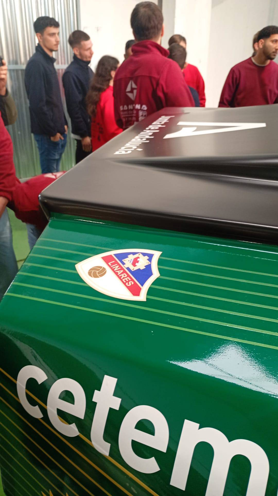

EL ESCUDO DEL LINARES DEPORTIVO VIAJARÁ AL DAKAR 2027
El Linares Deportivo estará presente en el Dakar 2027 gracias a su vinculación con Santana Motors. El escudo azulillo lucirá en uno de los vehículos del Santana Racing Team, llevando el nombre de Linares a una de las competiciones más reconocidas del mundo del motor.
La presencia del Linares Deportivo en el Dakar supone una oportunidad para proyectar la imagen del club más allá de nuestras fronteras. A través de esta colaboración, los colores azulillos acompañarán a Santana Motors en un nuevo desafío deportivo, uniendo dos símbolos muy ligados a la identidad de Linares.
EL PROYECTO DE SANTANA RACING TEAM
El proyecto del Santana Racing Team para el Dakar 2027 refuerza la apuesta de Santana Motors por la competición internacional. Una iniciativa que vuelve a situar el nombre de Linares en el panorama del motor y que permitirá al escudo azulillo compartir protagonismo con una marca histórica de nuestra ciudad.
FERNANDO ALONSO VUELVE AL DAKAR CON ASTON MARTIN
Fernando Alonso volverá a disputar el Rally Dakar en enero de 2027, siete años después de su primera participación. En aquella edición de 2020, el piloto asturiano terminó en la decimotercera posición de la clasificación general, acompañado por Marc Coma y al volante de un Toyota Hilux.
Esta vez, Alonso afrontará el desafío con Aston Martin, pilotando el nuevo Aston Martin Dreadnought, un vehículo desarrollado y preparado por Prodrive. Volverá a contar con Marc Coma como copiloto, con quien ya compartió aventura en su debut.
La participación en el Dakar no supondrá una despedida de la Fórmula 1. Alonso también continuará compitiendo con Aston Martin Aramco en la temporada 2027, por lo que afrontará dos grandes desafíos del automovilismo durante el mismo año.
LINARES Y EL MOTOR, UNIDOS
La presencia del escudo azulillo en este proyecto representa una oportunidad para llevar el nombre de Linares a un escenario internacional. Una unión entre la pasión por el fútbol, la tradición industrial de nuestra ciudad y el mundo del motor.
El escudo de nuestro glorioso también pone rumbo al Dakar. 💙